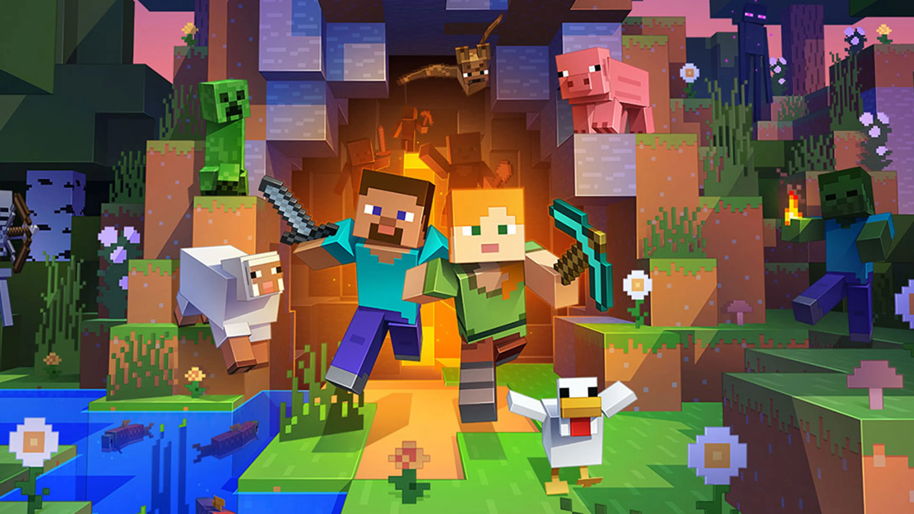

FlameCord vs BungeeCord
🔥 Introduction
BungeeCord is a popular proxy software that allows you to connect multiple Minecraft servers into one network. However, BungeeCord has some limitations and drawbacks that can affect your server’s performance, security, and functionality. That’s why many server owners choose to use a fork of BungeeCord instead, such as FlameCord.
✨ Features
🔗 BungeeCord: BungeeCord is the original proxy software that laid the foundation for other forks like FlameCord. While it provides basic proxy functionality, it lacks some of the advanced features offered by FlameCord.
🔥 FlameCord: FlameCord is a specialized fork of BungeeCord that focuses on enhancing server security, fixing exploits, and improving performance. FlameCord also includes unique features like an antibot system and support for HEX colors and custom MOTDs.
🚀 Stability
🔗 BungeeCord: BungeeCord's stability can vary depending on server configurations and plugins. It may be susceptible to some common exploits.
🔥 FlameCord: FlameCord aims to improve stability by addressing known exploits, fixing memory leaks, and optimizing performance. It provides a more stable environment for your Minecraft network.
⚙️ Performance
🔗 BungeeCord: BungeeCord's performance can sometimes be affected by heavy loads and plugins. It may not deliver the same level of performance as FlameCord.
🔥 FlameCord: FlameCord is designed to deliver superior performance with reduced lag and faster response times. It optimizes server resources and ensures a smoother gaming experience for your players.
🔌 Compatibility
🔗 BungeeCord: BungeeCord is compatible with a wide range of plugins and Minecraft versions, making it a versatile choice.
🔥 FlameCord: FlameCord maintains compatibility with BungeeCord plugins and versions, ensuring a seamless transition for server owners.
👉 Conclusion
When choosing between FlameCord and BungeeCord, it ultimately comes down to your server's specific needs. If you prioritize enhanced security, improved performance, and unique features, FlameCord is the way to go.
FlameCord is the ultimate solution for a secure and fast Minecraft network. Boost your server's performance and security with FlameCord! 🔒🚀
Download FlameCord Back to the top